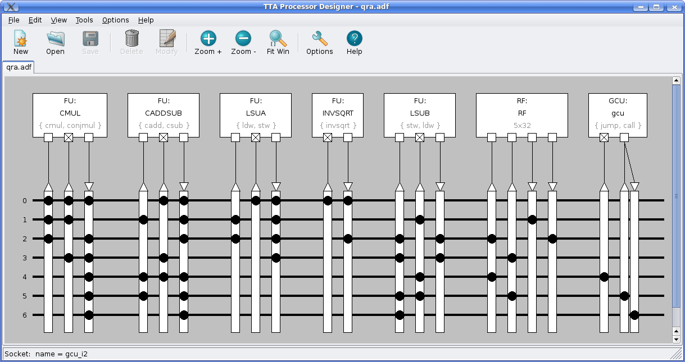
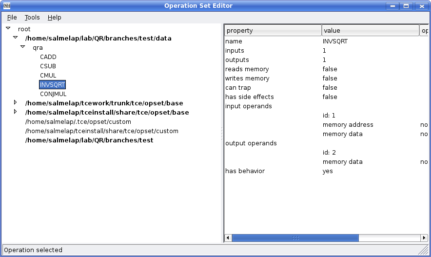

Screenshots & Screencasts
Screenshots
Some screenshots of using OpenASIP (thanks to Perttu Salmela, a TTA researcher in our department).

Creating a new TTA processor design using the graphical Processor Designer (AKA ProDe) tool. This architecture has several function units with custom operations for complex number arithmetics and inverted square root, two load-store units, a register file with five 32 bit registers, a control unit with jump and call control flow operations, and an optimized (partially connected) interconnection network.
Tracking a nasty bug in an hand coded parallel TTA program using the Processor Simulator GUI (AKA Proxim).
Inspecting the processor's data memory contents during simulation.
Single-stepping a program using the command 'stepi' of the simulator script interpreter console.
Figuring out the most heavily utilized architecture components using colorized component utilization visualization.

Custom operations are added to OpenASIP using a tool called Operation Set Editor (OSEd). The operation definitions of custom functionality are defined to the exact same database as "basic operations" such as addition or subtraction, or the "base operation set", a set of useful operations that is shipped with the OpenASIP installation.
Implementation data of the architecture components is stored in so called Hardware Database (HDB) files and edited with the HDBEditor tool. These databases contain the necessary information about the implementations for components (register files, function units) that is needed in order to generate the final HDL implementation of the processor. In addition, the database contains cost estimation data required by the processor cost estimation algorithms.
Finally, after a VHDL has been generated by the Processor Generator (ProGe) and the bit image of the program is dumped with Program Image Generator (PIG), the implementation of the processor can be simulated with any VHDL simulator such as ModelSimTM or the free VHDL simulator GHDL.
Screencasts
This slide set (39M) contains clickable videos and goes through most of the tool set.
The longer OpenASIP tour screencast is split to multiple shorter video clips found below. The videos are coded with Ogg Theora (ogv). In Windows and Mac, for example, the VLC media player supports them out of the box. In Linux, any media player should probably play them without problems.
Slides for guiding through the videos (size about 33MB):
OpenOffice.org Presentation (original) /
PowerPoint / PDF
Intro and exploration (6:53, 19.3MB)
Introduces the basic tools in OpenASIP such as the Processor Designer, the compiler and the simulator.
Profiling and using a custom operation (3:52, 8.3MB)
Shows how the program can be profiled using the simulator to find "hot spots" which can be accelerated with custom operations. Then shows how to add custom operation definitions to OpenASIP.
Adding SFU to the machine and using it in C code (1:31, 3.5MB)
Adding a "special function unit" to our TTA which supports the custom operation we defined. Also shows how to execute the custom operation from C code.
Adding implementation of the SFU to the Hardware Database (0:50, 2.3MB)
The special function unit needs to be implemented in VHDL in order to generate processors which use it. In this video, a previously implemented VHDL implementation of the function unit is added to a Hardware Database (HDB).
Generating the processor (0:32, 1.5MB)
The Processor Generator (ProGe) is used to produce a VHDL implementation of the TTA processor.
Change load-store unit to Avalon bus load-store unit (0:36, 1.9MB)
Because we want to synthesize the generated processor to a Stratix FPGA, the load-store unit is changed to one that is able to access memories and peripherals connected through the Avalon bus.
Using Avalon LCD for output (0:21, 0.9MB)
In order to produce verification output in the FPGA implementation, we add code that uses an LCD for printing the checksum and the source text.
Generate bit image of the program memory and synthesize the design (2:03, 5.9MB)
In this video, the bit image of the program memory is produced, the VHDL of the TTA is added to a system design in SOPC builder, and the design is synthesized to the FPGA.
FPGA (0:05 1.3MB)
The end result is displayed in this short clip. The FPGA board has executed the CRC algorithm running in the TTA processor and printed the verification output to the LCD screen. Unfortunately the video is quite blurry because it has been recorded with an old digital camera, so you have to trust me on this one :)